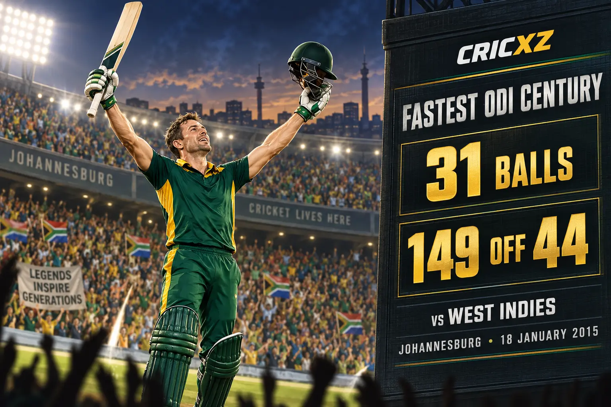

Test
- Matches
- 114
- Innings
- 191
- Runs
- 8,765
- Highest score
- 278*
- Batting average
- 50.66
- Hundreds
- 22
- Fifties
- 46

AB de Villiers scored 20,014 international runs and became renowned for inventive 360-degree strokeplay. The ICC Hall of Famer also built an exceptional IPL career, scoring 5,162 runs.
Career statistics are final.
De Villiers retired from international cricket in May 2018. The figures above were checked against ICC and established statistical records.
Across 420 international matches, de Villiers combined classical technique with an extraordinary range of scoring options. He kept wicket, captained South Africa and excelled in every batting position while maintaining Test and ODI averages above 50.

On 18 January 2015 at Johannesburg, de Villiers reached an ODI century from only 31 balls against West Indies. He finished with 149 from 44 deliveries, including nine fours and 16 sixes, establishing the record for the fastest hundred in men's ODI cricket.
De Villiers played 184 IPL matches between 2008 and 2021, scoring 5,162 runs at an average of 39.71 and a strike rate of 151.69. After beginning with Delhi Daredevils, he became one of Royal Challengers Bengaluru's most influential overseas players.
17 December 2004 – 2 April 2018
Debuted against England at Gqeberha and made his final Test appearance against Australia at Johannesburg.
2 February 2005 – 16 February 2018
Debuted against England at Bloemfontein and played his final ODI against India at Centurion.
24 February 2006 – 29 October 2017
Debuted against Australia at Johannesburg and made his final appearance against Bangladesh.
Scored more than 20,000 runs across Tests, ODIs and T20Is.
Reached 100 in 31 balls against West Indies in 2015.
Made 22 Test hundreds and 25 ODI hundreds.
Recorded his career-best Test innings against Pakistan in Abu Dhabi.
Finished his IPL career with three centuries and 40 fifties.
Earned the nickname Mr 360 for scoring around the entire ground.
Won the award in 2010, 2014 and 2015.
Was inducted in recognition of his outstanding international career.
Became one of the competition's most celebrated overseas batters.
Led his country across international formats during his career.
CricXZ is an independent cricket publication and is not affiliated with the ICC, BCCI, Cricket South Africa or any franchise.
Read Virat Kohli's career records, explore Sachin Tendulkar's statistics, or browse all CricXZ player profiles.